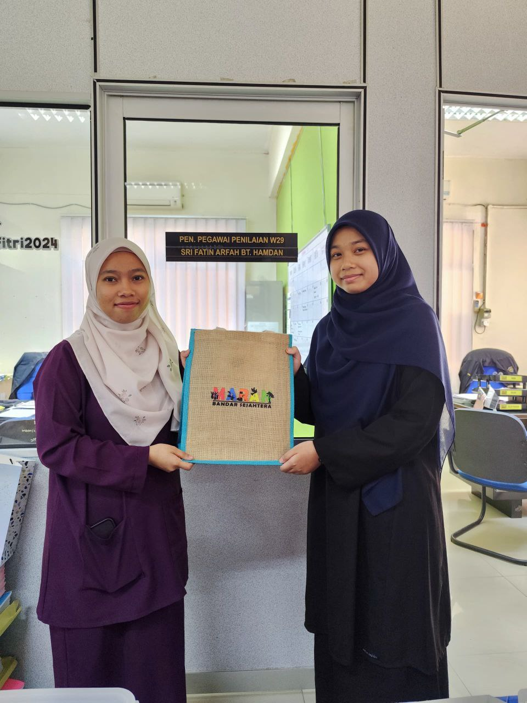

MY EXPERIENCE & SKILSS💼🔧
Experience and skills are the foundation of every success I have achieved, and every experience I have gone through has shaped who I am today.
Every skill I have learned, whether through challenges or accomplishments, has given me the opportunity to grow and become better.
Let me take you on a journey that has shaped my skills and experiences, which have taught me many things, honed my abilities, and guided me in achieving my life goals.

INTERNSHIP
I had industrial training at Majlis Daerah Maran, my experience as an intern taught me a lot about the world of work and helped me hone my skills.

SOFT SKILLS
I have the ability to adapt to new environments, and manage time.
These skills help me interact with others, and work more productively in any situation.

HARD SKILLS
My hard skills include basic CSS, HTML and C++.